think about how subsets and function that maps element to {0,1} are same
notation.multisets: multiplicity matters.
notation.sequence sets: multiplicity and order matter.
defn.relations are subsets of cartesian products.
eg. in a graph G=(V,E), edges E⊆V2 are relation.
defn. an order relation is set of pairs in a relation such that the first element is less than or equal to the second. it has
transitivity: if (x,y)∈R,(y,z)∈R, then (x,z)∈R
reflexivity: (x,x)∈R
linearity: ∀x∀y:(x,y)∈R∪(y,x)∈R
defn. a function relation of f:A→B is Rf⊆A×B={(x,f(x)):x∈A,f(x)∈B}.
requirements of R to be a function relation:
∀x∈A∃y∈B:(x,y)∈R
∀x∈A∀y1,y2∈B, if (x,y1)∈A and (x,y2)∈A, then y1=y2
defn. a function f:A→B is one-to-one if for all x1,x2∈A, x1=x2 imples f(x1)=f(x2).
defn. a function f:A→B is ontoB if for every y∈B there exists x∈A such that f(x)=y.
defn. an equivalent relation is a relation with
symmetry: if (x,y)∈R then (y,x)∈R
transitivity
reflexivity
defn.∣A∣≤∣B∣ if there exists a one-to-one function f:A→B.
defn.∣A∣=∣B∣ if any of following true
∣A∣≤∣B∣ and ∣B∣≤∣A∣;
there exists f:A→B that is both one-to-one and onto.
theorem.(Cantor–Bernstein) two definitions above are equivalent.
eg. let E={2m:m∈N}. then ∣E∣≤∣N∣ because we have f(m)=2m, and ∣N∣≤∣E∣ because we have f(m)=2m. so ∣E∣=∣N∣.
eg. let A=(0,1)⊆R,B=[0,1]⊆R. then ∣A∣⊆∣B∣ because we have f(x)=x, and ∣B∣≤∣A∣ because we have f(x)=2x+41 (shrink B to fit in A). so ∣A∣=∣B∣. but it is not obvious to find a both one-to-one and onto function.
eg. show ∣Z∣=∣N∣.
define g:Z→N
g(x)={2x−2x+1, x≥0, x<0
it is both one-to-one and onto. □
examples of infinite sets of same cardinality:
E≈N
(0,1)≈[0,1]
Z≈N
R≈(0,1): use tan:(−2π,2π)→R function
any two real intervals are of same cardinality
theorem.(Cantor)N≈Z≈E≈(0,1)≈[0,1]≈R. proof. show there does not exist an onto function from N to (0,1) (or equivalently (0,1) to N). let f:N→(0,1) be any function, write
choose the diagonal d=0.x00x11...xnn..., and let rf=0.y0y1...yn where for all i we have yi=xii. we claim rf is not in the range of f. so f is not onto. □
theorem.(generalized Cantor) for every set A, A≈2A. pf. let f:A→2A and we want to show it cannot be onto. define Zf={x∈A:x∈/f(x)}⊆A, we have Zf∈2A, we want to show for no x∈A we get f(x)=Zf (f must miss this subset in 2A). assume for contradiction that we have x0 such that f(x0)=Zf, if x0∈Zf then x0∈/Zf, and vice versa... □
Week 2. Jan 10
eg. show for all A we have A≤P(A).
define one-to-one mapping f(a)={a}∀a∈A. further by generalized Cantor we have A<P(A). □
eg. show R≈P(N).
start by R≈(0,1). note we can use binary expansion to represent numbers in (0,1), eg 0.10110100... but for each number, this series of 0 and 1's will represent a subset of natural numbers if 1 represents chosen and 0 otherwise for i∈N-th digit. eg f(0.10101) = {0,2,4}. □
corollary.∣N∣<∣R∣.
puzzle. suppose we have A<P(A)<P(P(A))<... what is the size of these sets altogether? the 'number' of sizes is larger than the 'size' of any set.
puzzle. is there any set A such that ∣N∣<∣A∣<∣R∣, ie size between that of N and R? there is no way to answer this question.
notation.
ℵ0=∣N∣
ℵ1= next infinite set of size larger than ℵ0
ℵ2=...
defn. set of size ℵ0 are called countable sets.
every infinite subset A⊆N is countable.
defn. set of size greater than that of N is uncountable.
theorem.(closure properties of family of countable sets)
if A,B are both countable, so is A∪B.
proof. we know A≈2Z,B≈2Z+1. then we naturally have one-to-one function that maps even+odd numbers to integers, then to naturals. □
if there are finite countable sets A1,A2,... that are countable, then so is ⋃i∈NAi.
corollary.Q is countable.
because you can use a pairs of naturals to represent rationals, then union them.
theorem. some further notes about sizes of infinite sets:
every infinite set A has a proper subset B such that ∣A∣=∣B∣.
for pairs of infinite sets A,B, then ∣A∪B∣=max{∣A∣,∣B∣}
for every infinite set A and natural number n, ∣An∣=∣A∣
it is not the case if n is infinite, eg ∣NN∣>∣N∣
regular languages
computation devices
tasks
DFA
given some language and a word, does this word belong to the language?
defn.
an alphabetΣ is any finite set of symbols
for all n∈N, Σn:=Σ×...×Σ (n times) is the set of all sequencesa1...an such that for all i≤n we have ai∈Σ
Σ∗:=⋃n∈NΣn, ie the set of all finite sequence of members of Σ
a language is a subset of Σ∗.
every alphabet Σ that we discuss will be finite.
theorem.∣Σn∣=∣Σ∣n.
theorem.Σ∗≈N, ie it is countable.
theorem. the set of all languages over Σ∗ is not countable. proof.P(Σ∗)≈P(N)≈R. □
defn. a deterministic automaton (DFA) is a 5-tuple:
Σ the alphabet of inputs to A
Q: finite set of states of A
q0∈A: the initial state
δ:Q×Σ→Q: a transition function
F⊆Q: accepting states
defn. the language L is accepted by A, ie w=σ1...σn∈L(A) iff ∃x1,...,xn∈Q such that x0=q0 and ∀ixi+1=δ(xi,Σi+1) and xn∈F.
eg. construct a DFA that accepts a string w∈{0,1}∗ iff the number of 1's in w is even.
q0
q1
0
q0
q1
1
q1
q0
accepting state is q0.
eg. describe a DFA A such that L(A)={w=w1...wn:n∈N,wn=1} (it it ends with 1).
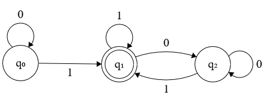
eg. find a DFA such that L(A)= all strings that starts and ends with the same symbol.
start from q0, if the first symbol is 1, then go to the same DFA above; if first symbol is 0, ...
eg. find A such that L(A)={w:#0(w)≡1modk} where #0= number of symbols 0 in w.
we need to store how many 0's we have seen so far.
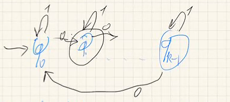
eg. describe a DFA such that L(A)={w=w11111w2:w1,w2∈{0,1}∗}, ie it has four 1's.
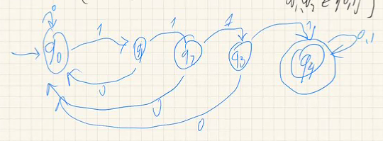
how can we prove that the language is accepted by A? one way of providing such statement is, for every state qi∈Q, let L(qi)={w:upon reading w we end in state qi}. describe each language L(qi) and prove by induction on the length of w that w∈L(qi) iff it satisfies properties.
theorem. there are languages L⊆Σ∗ such that no DFA accepts it. proof. for every nonempty alphabet Σ we have Σ∗=∣N∣=ℵ0, then {L:L⊆Σ∗}=∣P(N)∣>ℵ0, so the number of languages uncountable. we claim the number of DFAs over a given Σ is countable. let Wn={A:A is DFA with at most n states}, then we have at most nn∣Σ∣ possible transition tables. recall that A=(q0,{q0,...,qn−1},δ,F), the number of possible F is 2n, so ∣Wn∣≤nnn∣Σ∣2n is finite. hence the set DFAs is countable, but the number of languages are not. we cannot cover all the languages. □
definition. a regular language is a language that is accepted by a DFA.
corollary. the number of regular languages based on Σ is countable.
theorem.(closure properties of the set of regular languages)
closure under complement: if L is a regular language then so is L={w:w∈/L}
proof. flip the accepting states. □
if both L1,L2 are regular, then so is L1∪L2
proof. let A1=(Σ,Q1,δ1,F1,q01),A2=(Σ,Q2,δ2,F2,q01) be such that L(A1)=L1,L(A2)=L2. let the new DFA be Au=(Σ,Qu,δu,Fu,q0u) where
Qu=Q1×Q2
q0u=(q01,q02)
δu((qi,qj),σ)=(δ1(q1,σ),δ2(qj,σ))
Fu=F1×Q2∪Q1×F2={(qi,qj):either q1∈F1 or q2∈F2}.
use induction to show it satisfies. □
if both L1,L2 are regular, then so is L1∩L2.
pf. same but F∩=F1×F2. □
Week 3. Jan 17
defn. a non-deterministic automaton (NFA) is a tuple N=(Σ,Q,δ,F,q0) where
δ:Q×(Σ∪{ϵ})→P(Q)
or informally, NFA is a DFA plus following relaxations:
allowing multiple same-label transition out of state
allowing $\epsilon$-transition (switching between states without reading an input symbol)
defn. the language L is accepted by N, ie w∈L(N) iff ∃w obtained from w by inserting the symbol ϵ in as many places and ∃x1,...,xm such that x1=q0∀ixi+1∈δ(xi,yi) where yi is ith symbol in w and ym∈F.
eg. given DFA's A1,A2 construct A3 accepting L(A1)∪L(A2)
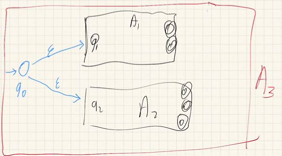
eg. let L={w∈{0,1}∗:third-last symbol in w is 1} = {111, 000100, 00101, ...}.
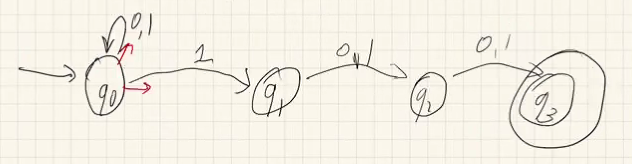
we can choose many paths. if any path leads us to an accepting state then w is accepted.
using DFA, we would remember the last 3 letters and each correspond to a state.
theorem.(closure properties of the set of languages accepted by NFAs)
closure under concatenation: if L1,L2 are accepted by N1,N2, respectively, then L1∘L2={w1w2:w1∈L1,w2∈L2} is accepted by an NFA.
proof. we chain N1 and N2: let the accepting states of N1 transit to the starting state of N2 using ϵ, and let the accepting states of N1 be no longer accepted. □
closure under * operation: given language L accepted by N, let L0=∅,L1=L,Ln+1=LnL, then L∗=⋃n∈NLn={w1...wn:wi∈Σ,n∈N} is accepted by an NFA.
proof. construct N∗ with a new starting state q∗ which is also accepted, and transits to starting state of N, q0, using ϵ. let all the accepting states of N transit to q0 via ϵ. □
remark. if we do not add this new q∗ but reuse q0 we would have error: a word finishes scanning and land on non-accepting state which can transit to q0, then this word is suddenly accepted.
theorem. a language L is accepted by an DFA iff is accepted by a NFA. proof.
(forward) every DFA is also an NFA.
(backward) given some NFA N=(Q,q0,δ,Σ,F), construct A=(Q′,q0′,δ′,Σ,F′) where
Q′=P(Q)
q′={q0}
δ′(R,a)=⋃q∈Rδ(E(q),a) where E(q) is the set of states reachable from q via ϵ-transitions only
F′={w⊆Q:w∩F=∅}□
corollary. converting an NFA into a DFA, the DFA may have 2n states.
corollary. a language is regular is regular iff it is accepted by an NFA.
corollary. the set of all regular languages is closed by union, intersection, concatenation and star.
theorem. every finite language is regular. proof. let L={w1,...,wn}. we know for every word wi=ai1...aiki, the individual letters {ai1},...{aiki} are regular, by closure of concatenation, we know for every word wi, Lwi={wi}={ai1...aiki} is regular. by closure of union we know L=Lw1∪...∪Lwn is regular. □
theorem. every regular language can be derived from these basic languages by a finite sequence of closure operations.
inductive definition of regular languages
we can define sets in 3 ways:
listing all elements
describing common properties
inductive definition: define domain (universe) X, core set A, and operations O, then I(X,A,O) is minimal set W containing A and is closed under operations in O.
we will require both X and A are defined and
A⊆X
O is a set of functions from Xn to X
Week 4. Jan 24
eg. X = all human beings, A = {me}, O = {parent of, child of, spouse of}. my blood relatives are I(X,A,O).
theorem. if W1,W2 are two sets that contain A and is closed under O, then W1∩W2 also contains A and is closed under O.
theorem.(minimality) define W=⋂iWi where Wi's are all sets that contain A and is closed under O, then not only W contain A and is closed under O, but also is minimal in this respect. proof. because if any set W satisfies the properties, then it is among the sets intersected in the definition of W, so W⊆W. □
theorem. such W=⋂iWi is unique.
eg. assume we know real numbers, define natural numbers: I(R,{0},{x↦x+1})=N.
eg. define set of all polynomials with integer coefficients.
X= all finite strings over Σ=N∪{+,∧,∗}
A={+1,−1,x}
O={(p,q)↦p+q,(p,q)↦p∗q}
eg. set of all propositional formulas.
X= all finite strings over Σ= lower case English letters with/without indices ∪{(,),∧,∨,→,¬}
A= all lower letters with/without indices
O={α∨βα,β},{α∧βα,β,{α→βα,β},{¬αα}}
inductive sets have the ability to prove properties by structural induction.
formally: let R⊆X be some property, if A⊆R and whenever [x1,...,xn]∈Rn so is f(x1,...,xn) for every f∈O, then I(X,A,O)⊆R.
eg. have 3 cups initially positioned as ∪∩∪, one can flip two cups each time. can i finally flip all of them upright?
base set: {∪∩∪}
operations: {flip left two, flip right two, flip two ends}
property: number of upright cups is even.
for base set: we know ∪∩∪ satisfies property.
if we have a configuration c satisfying this property, if we flip two, then either i flipped two in same position => number changed by 2 => no effect on oddity; or i flipped one up and one down => number does not change. so we still have even number.
we can never have all cups upright (∪∪∪ is outside R). □
we can use inductive sets to revisit regular expressions.
defn. set of regular expressions is I=(alphabet∗,A,O) where:
for simplicity we omit "∘", and delete brackets according to priorities: ∗>∘>∪. it is also common to use + instead of ∪.
theorem. for alphabet Σ, we define a function L that maps regular expressions to languages for every regular expression r such that L(r) is subset of Σ∗
L(∅)=∅ (empty expression -> empty language)
L(ϵ)={ϵ}
L(a)={a} for every a∈Σ
L(R1∪R2)=L(R1)∪L(R2)
L(R1R2)=L(R1)L(R2)
L(R∗)=(L(R))∗
such L is well-defined. idea. this is well defined whenever I(X,A,O) has a unique readability property, ie for every r∈I(X,A,O), either r∈A or there are uniquely defined f∈O and r1,r2∈I(X,A,O) such that f(r1,r2)=r.
remark. why do we need ∅ in definition of regular languages? because there are languages that do not accept anything, and we need a mapping from regular languages to it.
eg. assume Σ={a,b}, let L1= all strings containing a, r=(a∪b)∗a(a∪b)∗, then L(r)=L1.
eg. let r=(a+b)∅, what is L(r)? it is ∅ because it is followed by empty set => cannot generate.
eg. find r such that L(r)= all strings where every a is immediately followed by a b. r=((ϵ∪a)b)∗.
defn. a generalized non deterministic automaton (GNFA) is a tuple (Σ,Q,q0,qF,δ)
Σ: finite alphabet
Q: finite states
starting state: q0
accepting states: qF
transitions δ:(Q−{q0})×(Q−{qF})→(Q−{q0}): δ defines the labeling of edges in the GNFA, where edges are regular expressions
or informally an NFA where,
there is a unique start state q0 and no arrows go into it
there is a unique end state qF and no arrows go out of it
every arrow is labeled by a regular expression
defn. a string w is accepted by GNFA D, ie w∈L(D), iff there exists a path q0...qkqF such that w=w0w1...wk and for every i≤k we have wi∈L(δ(qi,qi+1)) and wk∈L(δ(qk,qF)). ie we are matching the input word by regexes part by part.
aaabb:
a* b*
q0 ------> q1 ------> qF
theorem. for every DFA D, there exists a NGFA G accepting same language, ie L(D)=L(G). proof. we need to remove labels entering q0: add a new nonaccepting starting state q0 that goes to the original q0 by ϵ. then need to remove labels leaving accepting states: add a new accepting state qF and any previous accepting states go to it by ϵ. make the previous accepting states non-accepting.
if we have self-loops q1→q2 by a, we can star it: a∗.
then we relabel using regexes and eliminate useless states. given any GNFA G=(Σ,Q,q0,qF,δ),Q={q0,...,qk,qF}, we will construct GNFA's G1,...,Gk such that Q(Gi+1)=Q(Gi)−{qi} and L(Gi+1)=L(Gi), Q(Gk)={q0,qF} (?). connect any q with an edge leading into qi to any node with an arrow from qi to that state
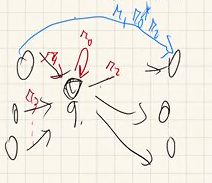
(if state q1 goes to q2 by two arrows r1,r2, then replace two arrows by a single one r1+r2)
we shrink edges until we only have two states from q0 to qF. □
we now have the third type of automaton aside from DFA and NFA, we we can show the following theorem.
theorem. for every Σ, {L(r):r is regular expression over Σ}={L(A):A is a DFA over Σ}=all regular languages over Σ∗. proof. we want to show for a regular expression r, there exists some DFA Ar such that L(Ar)=L(r). we know regular expressions = I(X=strings, A={∅,ϵ}∪Σ, O={...}), we want to show it has equivalent automaton. by induction, base: we just show each member A has a DFA:
∅ (rejects everything): just a single starting state q0 non-accepting, and transits everything to itself
ϵ (accepts only empty string): one starting state q0 accepting, and it transits to q1 via ϵ non-accepting. q1 transits to itself via ϵ.
Σ: one starting state q0 non accepting, transits to an accepting state by letters in Σ
induction: let r1,r2 be regular expressions, assume there are DFAs D1,D2 s.t. L(D1)=L(r1),L(D2)=L(r2) (IH), we want to show after operations IH still holds:
show there exists D3 s.t. L(D3)=L(r1∪r2)=L(r1)∪L(r2): recall the family of regular languages is closed under union and result is still regex, by IH it has an D3.
show there exists D3 s.t. L(D3)=L(r1r2)=L(r1)L(r2): recall the family of regular languages is closed under union...
show there exists D3 s.t. L(D3)=L(r∗)=L(r)∗: recall the closure of regular languages under *...
so for every regular expression r there exists some DFA D s.t. L(D)=L(r), and left ⊆ right.
the remaining direction is for every DFA, there is a same regular language. we just convert it into a GNFA with only two states. the regex on the edge is the regular expression we want. □
Week 5. Jan 31
the pumping lemma
corollary. for every Σ there exists L⊆Σ∗ that is not regular. proof. we know the set of languages is uncountable and set of DFAs over Σ∗ is countable (so set of regular expressions over Σ∗ is countable). □
can we point to a non-regular language?
theorem.(the pumping lemma) for every regular language L there exist some number nL such that for every w∈L such that ∣w∣>nL there is a partition of w into sections w=xyz satisfying:
∣xy∣≤nL,
y=ϵ,
∀i∈N∈xyiz∈L.
proof. let A be a DFA accepting L and let nL denote number of states in A. let w∈L with ∣w∣>nL, consider the sequence of states q0,δ(q0σ1),,δ(q0σ1σ2),...,δ(q0σ1...σm) where w=σ1...σm, then there exists σr,σs such that δ(q0σ1...σn)=δ(q0σ1...σnσr...σs) (we are repeating some states).
now define x=σ1...σn,y=σr+1...σs,z=σ=δs+1...σm by picking r such that δ(q0σ1...σr) is different than any δ(q0...qi) for any i<n and that δ(q0σ1...σr+1),σ(q0σ1...σr+2),...,δ(q0σ1...σs) are all different, we are guaranteed that ∣xy∣≤nL. then δ(q0σ1...σr(σr+1...σs)iσs+1...σm)=δ(q0σ1...σr(σr+1...σs)jσs+1...σm) for all i,j∈N. □
converse is not true
eg. given L={anbn:n∈N}, show it is not regular.
pick any nL, given a word w=anL+1bnL+1∈L, since we want to have ∣xy∣≤nL we pick partition xy to be a sequence of a's. then xy2z will have nL+1+∣y∣a's and nL+1b's, which is not in L, failing the pumping lemma (3). □
eg. show palindromes L={wwR:w∈{a,b}∗} is not regular.
consider w=anL+1bbanL+1.
eg.(languages over an alphabet with just one symbol) let L⊆{a}∗,Ln={w∈L:∣w∣=n}, show every infinite language K where for arbitrarily large numbers k there exists nk such that for all nk≤i≤nk+k such that Li=∅ is not regular.
given any number there is a hole of that length
a aa ... a^5 a^6 a^7 ... a^15 a^16
pick any nL, and pick any k>nL such that w:=ak∈K and for all i≤nL+1 we have ak+i∈/K. then let xyz be any partition of this word such that ∣xy∣≤nL, then ∣xy2z∣=∣w∣+∣y∣≤k+nL<k+nL+1 and it is not in K. □
the machine will lose track of states and 'sleep' after rejecting too many.
eg.{an2:n∈N} is not regular.
because the gap between n2 and (n+1)2 can be arbitrarily large.
eg.{ap:p is prime} is not regular.
it is an infinite language but for every k there exists a prime number p such that p+1,...,p+k is not in the language.
eg. show L={w∈{a,b}∗:#a(w)=#b(w)} is not regular.
use closure property. consider {ab}∗−L=anbn, we know it not is regular either by last example, but it should if L were regular. □
combinatorial definition of regular languages
the pumping lemma is not a characteristic of regular languages, but MN theorem is.
defn. given a language L⊆Σ∗, we say w,w′∈Σ∗ are distinguishable with respect to L if there exists some z∈Σ∗ such that one of wz,w′z is in L and the other is not.
claim. given L we define an equivalence relation over Σ∗ by w≡Lw′ if w,w′ are not distinguishable via L. proof.
reflexivity: clear
transitivity: let w1≡Lw2,w2≡Lw3, then for all z, w1z∈L⟺w2z∈L⟺w3z∈L so w1≡Lw3.
commutativity: clear □
using this relation we can partition Σ∗ into equivalence classes.
eg. let Le={w:∣w∣∈2N}. then ab and abb are distinguishable (a simplest empty string as z will work). we can also partition Σ∗ into two equivalence classes (even length and odd).
eg. let L={anbk:n,k∈N}. then there are infinitely many equivalent classes {w:#a(w)−#b(w)=i} for all i...
eg. let Lk={w∈Σ∗:#a(w)≤k}. depending on how many a's there are k+2 equivalent classes.
Wi={w:#a(w)=i} for 0≤i≤k
W>k={w:#a(w)>k}
theorem.(Myhill Nerode) a language L is regular iff the number of equivalence classes of ≡L is finite. furthermore, the number of equivalence classes is the number the minimal number of states in any DFA for L.
equivalently: L is regular iff number of subsets W⊆Σ∗ such that every two of its elements are distinguishable by L, is finite.
proof.
assume L is regular. then there are a DFA D=(Σ,Q,q0,δ,F) that accepts L. note for every q∈Q, {w∈Σ∗:δ(q0,w)=q} (final state) is an ≡L equivalence class, by that for every z∈Σ∗, any words concatenated with z, w,w′ will re-start at the same previous final state (q), so wz,w′z must be (un)distinguishable at the same time.
corollary. the number of ≡L equivalence classes is less than ∣Q∣ and therefore finite.
assume the number of ≡L equivalence classes is finite. for a word w, let [w]L denote its belonging ≡L class. construct a DFA D=(Σ,Q,q0,δ,F) by letting
Q={w⊆Σ∗:W is equivalence class to ≡L}
q0=[ϵ]L
δ([w]L,σ)=[wσ]L
F={[w]L:w∈L}.
for all w∈Σ∗, we have δ(q0,w)=[w]L, so L(D)={w∈Σ∗:δ(q0,w)∈F}={w∈Σ∗:[w]L∈F}={w∈Σ∗:w∈L}.
we have ∣Q∣≤ number of equivalence classes. the equivalence classes of ≡L are merges of the difference kinds of inputs so number of equivalence classes ≤∣Q∣. □
eg. show L={w=w1...wn∈{a,b}∗:n≥k,wn−k+1=a} is regular.
we see w≡Lw′ iff the last k-long substring in w is the same as the last k-long substring in w′. so we have 2k equivalence classes depending on the available combinations. □
claim. any nonmempty language L accepted by a DFA with k states must accept some word of length less than or equal to k.
context-free languages
every CFL is defined by a context-free grammar. while regular languages are defined by either a DFA/NFA or a regular expression (description), CFL are defined by a method generating the language.
defn. a context-free grammar (CFG) is a tuple G=(Σ,V,S,R) where
Σ is the alphabet
V is a finite set of symbols representing variables, and we require Σ∩V=∅
S∈V
R is a finite set of generation rules of the form A→w for some A∈V,w∈(V∪Σ)∗
defn. a context-free language for G is L=I((Σ∪V)∗,C,O)∩Σ∗, where C=S, O is a collection of operations w↦w′ where w=uAv,w′=uwv and A→w∈R.
eg. show the language for the following grammar is L={0n1n:n∈N}.
Σ: {0,1}
V: {s}
S: s
R: s -> 0s1, s -> ϵ
words before intersection: 0s1, 00ss1, ..., 0000s1111, 00001111, ...
language for this CFG = U=I({0,1},{s},O)
show U⊆L by structural induction of U:
showing U has the form 0ns1n or 0n1n
base: there is only one element in the core set: s, and it is in L.
inductive: assume w=0ns1n has this form, then using the first rule we have result 0n+1s1n+1, using the second rule we have result 0n1n.
this suffices since applying rule 2 removes s to become 0n1n
show L⊆U by usual induction on n:
let w=0ns1n and show it is in U
base: n=0, then word is s
inductive: assume 0ns1n∈U, then we use rule 1 to get 0n+1s1n+1∈U
this suffices because finally applying rule 2 removes s□
eg. find a CFG to generate L={anbk:n≤k}.
Σ: {a,b}
V: {S,T}
S: S
R: S -> aSbT | ϵ
T -> bT | ϵ
eg. find a CFG to generate L={w∈{a,b}∗:#a(w)=#b(w)}.
Σ: {a,b}
V: {S}
S: S
R: S -> aSbS | bSaS | ϵ
showing L includes this is easy. proving this includes L: use induction on ∣w∣, assume every 'balanced' w=w1...wn of length n can be generated by the grammar. let m be minimum index from which w1...wm is balanced, then we claim w1=wn. so w2...wm−1 is balanced, so my grammar will generate based on this portion. □
theorem. every regular language is a context-free language. proof. use induction on all regular languages: I(P(Σ∗),{∅,ϵ}∪Σ,{∪,∘,∗})
base: for empty language ∅, just use one rule S -> S; for ϵ, use rule S -> ϵ; for each a in Σ, use rule S -> a to generate the language
inductive: assume we have CFG L(G1)=L1,L(G2)=L2
L(G1)∪L(G2): A -> w, A -> v to A -> w|v
L(G1)L(G2): wrap G1's starting rule S -> w with extra D' -> S and; wrap G2's T -> v with extra T' -> T. then use new starting symbol C with rule C -> ST
L(G1)∗: wrap starting rule S -> w by S' -> S and use new starting symbol C with rule C -> S'|CC|ϵ□
Week 6. Feb 7
parse tree: internal nodes are in V. leaves are in Σ∗. it describes the generating sequence too.
a parse tree for a given w∈L(G) is not necessarily unique.
eg. set of well formed propositional logic expressions
Σ: {(,),∧,∨,¬,→,p1,...,pn}
V = {S}
R = S -> p1 | ... | pn
| ¬S
| (S ∧ S)
| (S ∨ S)
| (S → S)
| ϵ
parse tree for (p1∨p2)→p3:
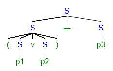
the brackets are necessary to avoid ambiguity (multiple possible pares trees for same expression).
the pumping lemma
the set of context-free languages over an alphabet is countable because derivation rules are finite objects.
defn. the degree of a tree is the max number of down-going edges from any vertex; the height of a tree is the length of the longest branch of the tree.
lemma. for any tree T, the number of leaves of T≤dh where d=deg(T),h=height(T).
note that if T is a derivation tree for a word w in some L, then # leaves≥∣w∣, and d(T)≤max∣w∣{A→w∈R} (longest word produced by one rule), so h≥logd∣w∣.
theorem.(the CFL pumping lemma) for every CFL L, there is some number p∈N such that for every w∈L if ∣w∣>p then there is a partition of w into 5 parts w=xyzuv and
∣yzu∣≤p,
∣yu∣≥1,
xyizuiv∈L for all i∈N.
proof. let G be the grammar and let p=d∣V∣+1 where d is the degree of any derivation tree and ∣V∣ be number of variables. let w∈L(G) be a word longer than p. pick a derivation tree for w with minimal possible number of vertices so we have the 'height' of derivation steps h≥∣V∣+1, which means we must have repeated some variables. consider the two lowest occurrences of such variables, call these nodes A,B and A is on the left of B. as the leaves of the tree are the word itself, we pick
the leftmost subtree of A as x,
to the leftmost subtree of B as y,
to the rightmost subtree of B as z,
to the rightmost subtree of A as u,
the rightmost subtree of A as v.
we can generate powers of y and u because we can mimic the reuse of variable seen in A and B in the leaf level. □
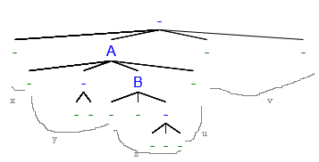
eg. let L={anbncn∈{a,b,c}∗:n∈N}, show it is not context-free.
given any p∈N, pick w=apbpcp∈L. for every partition w=xyzuv, we have ∣yzu∣≤p (1), there exists a letter in a,b,c that does not appear in it. now pick i=2 and consider xy2zu2v, then apply (2) that ∣yu∣≥1 (it is not empty). we found that we are only increasing the count of possibly one or two letters, but not for the third letter, so the count for all three letters do not equal, failing (3). □
eg. let L={ww:w∈{a,b}∗} is not context-free (in contrast, set of palindromes are using S -> aSa|bSb|ϵ).
given any p∈N, consider w=apbpapbp∈L. a division yzu can only touch 2 parts at most. □
theorem.(closure property of CFL) if L1,L2 are context-free, then
L1L2 is context-free
L1∪L2 is context-free
L1∗ is context-free.
defn.L is a boolean combination of L1,L2 if there is a function ∗:{T,F}2→{T,F} such that for all w∈Σ∗ we have w∈L iff ∗(w∈L1,w∈L2)=T.
the set of CFL is however not closed under boolean operations.
eg. show L1={akbncn:n,k∈N},L2={anbnck:n,k∈N} are CFL, but their intersection is not.
the rules for L1 is:
S -> AB | ϵ
A -> Aa | ϵ
B -> bBc | ϵ
for L2 it is similar. we have L1∩L2={anbncn:n∈N} which is not context-free. □
we also know the complement of a CFL can also be not closed because complement can be represented by union/intersection and negations.
pushdown automata
we use pushdown automata to compute CFL. it is an NFA endowed with a stack memory. whenever we scan a new letter, we can compare it with the top elements on the stack, and push it to the stack.
Week 7. Feb 14
defn. a pushdown automata is a tuple P=(Σ,Q,q0,F,δ,Γ) where
Σ is vocabulary
Q is set of states
q0∈Q is start state
F⊆Q is accepting states
δ:(Σ∪{ϵ})×Q×(Γ∪{ϵ})→P(Q×(Γ∪{ϵ})) is transition function, which changes state and changes stack symbol
to push in γ, (a,q,ϵ)↦(q′,γ),... (pretend we have an ϵ on top of stack, replacing this virtual element with γ is addition)
to delete from stack, (a,q,γ)↦(q′,ϵ),...
Γ is a stack symbols
defn. a word w is accepted by P, ie w∈L(P) iff there exist w0w1...wm∈(Σ∪{ϵ})∗, r0r1...rm∈Q, s0s1...sm∈(Γ∪{ϵ})∗ (ie some live contents of letter, state and stack) such that for all i we have (ri+1,b)∈δ(ri,wi,a) such that si=at (curr stack) and si+1=bt (new stack) for t∈Γ∗ (sequence of stack contents), and last state rm∈F.
we can use a 3d matrix to represent the transition function...
eg. construct a PDA accepting language L={anbn:n∈N}.
whenever we see a, we push a symbol, when we see b, we pop a symbol. if we reach the bottom when we finish the word, we accept it.
let P=(Σ={a,b},Q={q0,q1,q2,q3},q0,F={q0,q3},δ,Γ={$,a}), where the transition is
Q\Σ
ϵ
a
b
q0
ϵ↦(q1,$)
q1
ϵ↦(q1,a)
a↦(q2,ϵ)
q2
b↦(q3,ϵ)
a↦(q2,ϵ)
q3
(incomplete)
can we read/write multiple symbols on stack? nothing changes as long as we bound the length of word, just split the operation into some auxiliary states.
eg. construct PDA for L={anbick:n=i∨i=k,n,i,k∈N}.
theorem. a language L is context-free iff there exists a PDA P such that L=L(P). proof.
assume L is context-free with grammar G, we want to construct a PDA P such that L(P). the special symbol S means start of word, $ means end. a means any letter, e means epsilon.
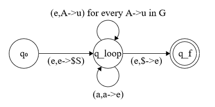
namely just push necessary letters to stack, and then pop from word to match.
suppose we have a PDA P. then define the language: variables V={Apq:p,q∈Q}, and rules
Apq→aArsb whenever for some stack string u we have (r,u)∈δ(p,a,ϵ),(s,ϵ)∈δ(s,b,u)
--p--a------r-----s--b--q--
we claim ∀p,q∈Q,∀x∈Σ∗, Apq→x iff upon reading x from state p with an empty stack we can get to state q with empty stack.
too complicated, skipped
corollary. if L is a CFL and L′ is regular, then L∩L′ is a CFL. proof. let P be a PDA for L, and D be a DFA for L′. define a new PDA such that it is a product of P and D:
eg. given L is CFL and R is regular, is L−R a CFL?
note L−R=L∩R, so it is CFL. □
eg. show L={w∈{a,b,c}∗:#a(w)=#b(w)=#c(w)} is not context-free.
assume for contradiction L is context-free, then consider L′=L∩L(a∗b∗c∗)={anbncn:n∈N} which is not an CFL. but since L(a∗b∗b∗) is CFL (regular) it should. □
Week 9. Feb 28
turing machines
church thesis: all reasonable ways of defining what are computable tasks, are equivalent.
eg.
those can be computed using turing machines.
set of functions I(functions,{+,−,×,...},{f,g↦f∘g})
the set of all predicate functions (eg ⊢∀x...)
any tasks solvable by a computer program (independent of the programming language or hardware)
defn. a turing machine is a tuple T=(Σ,Γ,Q,q0,qacc,qrej,δ) where
Σ: finite vocabulary
Γ: finite symbols that can be used in the tape
Q: finite states
q0: initial state
qacc: accepting state
qrej: rejecting state
δ:Q×Γ→Q×Γ×{L,R}
(q,γ)↦(q′,γ′,R) means when the head is symbol γ on tape and machine is in state q, move the head right one location and replace symbol with γ′ and move to state q′
defn. a configuration of a turing machine is C=(u,q,v) where u is the tape locations before the current location, u is the locations after the current location, q is the current state.
_________|a|_______
<---u---> <--v--->
defn.C→∗C′ if allows going from C to C′ in finitely many steps.
eg.(uaqbv)→(uacq′v) means δ(q,b)=(q′,c,R); (uaqbr)→(uq′acv) means δ(q,b)=(q′,c,L).
defn. a word w∈Σ∗ is accepted by T, ie w∈L(T) iff there exist some u,v∈Γ∗, such that (ϵq0w)→∗(uqaccv).
it is not in L(T) if either it leads to rejecting states (no configuration leading to accepting) or it leads to indefinite moving.
defn. a language L is turing recognizable if there exists some turing machine T such that L=L(T).
defn. a language is decidable if there exists a turing machine for it and the machine gets to either accepting or rejecting states.
eg. fix some first order logic, let L={α:⊢α} (any proof that proves α). it is recognizable as T will go over all finite sequence of formulas, for each it will 1) check whether it is legal proof 2) is the last formula α. it is not decidable however.
the family of decidable languages is closed under complement (just switch qacc,qrej).
however turing recognizable languages are not closed under complement (those that never halt)
robustness of TM model of computation
we can consider some variations of turing machines that are equivalent.
eg. allowing the reading head not move left or right: Q×Γ→Q×Γ×{L,R,S}.
can be simulated by a standard TM: go left then back right without changing state
eg. have k tapes simultaneously: δ:Q×Γk→Q×Γk×{L,R}k.
clearly the k-tape machine is as powerful as a standard TM. create a tape that has k segments, and for each of them duplicate the γi's. each has a special letter γj where j's are different across segments.
-----+----------------------+-----
-----+----------------------+-----
tape 1 ... tape k
eg. two-stack PDA.
one stack for left side, one for right side. moving head to right => moving top element from right stack to left stack, ...
eg.non-deterministic turing machines: δ:Q×Γ→P(Q×Γ×{L,R}). a word w is accepted by it iff there is a way to get (uqaccv) from (q0w).
use a 3-tape TM to simulate it. start from C0=(q0w), we can go to three configurations C11,C12,C13, which can each have three configurations... using BFS, if there is a way to get to accepting state, then it is accepted. for the 3 tapes
first tape contain the input w
second tape pick some determinism to some computation mode
just a temp memory to do computation
third tape list nodes that have been covered. it keeps track which computation we are doing now
numerating machines
add a new state qprint. when the machine reaches qprint, we view the current content of the tape as the output.
defn. a word w is accepted by the enumerator E, ie w∈L(E), iff it can be printed.
defn.L is recursively enumerable if there exists some enumerator E such that L=L(E).
claim.L is recursively enumerable iff it is recognizable. proof.
given a turing machine T that recognizes L, define a enumerator such that
we have two tapes. first tape is for storing contents so fat, second tape is like T. let w0w1...wn.. be a word at step i, run T on w0w1...wi for i many steps, write them on the first step and repeat. note if w∈L(T) reaches its qacc. if w∈L(T) then it reaches qacc and so at qprint it is printed. if w∈/L(T) then either runs forever or reaches qrej.
given an enumerator E that accepts L, construct a turing machine where we just compare the word with what would have been printed by E, accept if there is a match. □
theorem. a language L is decidable iff both L and Σ∗−L are recursively enumerable. proof.
suppose L is decidable, then it is recognizable so is its complement, so they are recursively enumerable.
suppose L,L are RE. let E,E be their enumerators. define a turing machine that accepts L and halts on every input: for any input w∈Σ∗, run E,E in parallel, we know w must be eventually printed by one of them in finite steps. □
remark. language is decidable if enumerator can print strings in lexicographical order.
how can one show a language is not decidable?
hilbert's 10th problem: given a polynomial of several variables P(x,y,z,...)=0 decide if it has integer solutions.
if there is one variable P(x)=a0+a1x+...+akxk we can calculate a bound on the absolute values of any potential solution. it is decidable.
theorem.Lp={⟨P⟩:P is a polynomial with integer solution} is undecidable. (angle bracket: encode object as a binary string)
eg.{⟨G⟩:G is undirected graph that is connected} is decidable.
try design a TM to scan the encoded string..
eg.LDFA={⟨w,D⟩:D is DFA that accepts w} is decidable.
just run the DFA with w...
eg.EDFA={⟨D⟩:D is DFA and L(D)=∅} is decidable.
use pumping lemma, if D accepts no word of length less than ∣Q∣+1 then it does not accept other words (assume otherwise, choose a word > this number in language, pump by power of 0 to create contradiction).
eg.LDFA-eq={⟨D,D′⟩:D,D′ are DFAs and L(D)=L(D′)} is decidable.
note L(D)=L(D′) iff both L(D)−L(D′) and L(D′)−L(D) are empty. construct the difference DFA (product DFA) and go to the previous eg.
eg.LPDA={⟨w,G⟩:w∈L(G)} is decidable.
turn the grammar G into a PDA...
eg.ECFG={⟨G⟩:L(G)=∅} is decidable.
pumping... the threshold is ∣s∣∣V∣+1 where ∣s∣=max{∣s∣:A→s∈R}
eg.LCFG-eq={⟨G,G′⟩:L(G)=L(G′)} is undecidable.
construct G such that L(G)=L(G)−L(G′). turns out that it is undecidable...
Week 10. Mar 7
eg.ATM={⟨T,w⟩:w∈L(T)} is undecidable.
assume for a contradiction that it is decidable and let A be the turing machine/algorithm. define a new algorithm D as follows:
fix w, on any input ⟨M⟩ that encodes a turing machine, and D(⟨M⟩)=accept iff A(⟨M⟩,w)=reject.
then feed ⟨D⟩ into D. if D(⟨D⟩)=accept, then A(⟨D⟩,w)=reject, then it means D(⟨D⟩)=accept. same for the other direction. so we get contradiction. □
however it is recognizable. given word of and the machine, just run it.
the problem for rejecting a word is it can possibly run forever.
eg.(halting problem)H={⟨M,w⟩:M halts on input w} is undecidable.
we use proof by reduction. suppose otherwise it has decider H. given ⟨T⟩,w be input for ATM problem. then feed this into H, then it can either accept or reject and run in finite steps. then we have solved ATM but we should not. □
eg.ETM={⟨M⟩:L(M)=∅} is undecidable.
suppose otherwise it has decider ETM. given ⟨T⟩,w be input for ATM problem, fix w and define M′ such that
if M ever accepts a word x, compare with w and if equal, accept, otherwise reject.
feed M′ into ETM, as it runs in finitely many steps we can solve ATM problem. □
eg.EQTM={⟨M,M′⟩:L(M)=L(M′)} is undecidable.
suppose otherwise it has decider EQ. let M0 be some machine that accepts nothing. then for an input ⟨M⟩ for the ETM problem, L(M)=L(M0) iff L(M)=∅ so we can use EQ to solve it. □
eg.All={⟨M⟩:L(M)=everything} is undecidable.
examples of undecidable problems that do not mention turing machines
existence of integer solutions of polynomial
given finite pile of domino tiles, each of them has two sides with a finite word on each side. we can copy and reuse some of the tiles. can they be arranged in a way such that the concatenation of face words = concatenation of back words?
word complexity
how to measure complexity of a words? try do this by its 'description length', ie how long is the shortest way to describe the word.
the Barry paradox: consider a number has a short definition if there is an English sentence of words less than 200 characters that defines it. is the set of all shortly described numbers finite?
say we have 40 chars in English. then there are 40200 possible descriptions so the set is infinite.
then 'the smallest number that cannot be described in 40200 letters'.
the problem is the description must be some fixed 'description language'.
eg. a Python program that given empty inputs it returns a string. then the program is the description.
defn.kolmogorov complexity is the length of the shortest description Kd(s):=min{∣p∣:d(p)=s}.
theorem. some properties:
for every d, there exists c∈N such that for all c we have Kd(s)≤∣s∣+c.
eg.print {s}
there exists description that is much shorter than the word.
eg.'1' repeated 2^n times (length logn)
there are infinitely many string s such that Kd(s)≥∣s∣.
proof. we ask how many descriptions of size less than ∣s∣ are there: ∑i=1∣s∣−12i=2∣s∣−1 (assume alphabet is binary encoded). however there are 2∣s∣ strings of size ∣s∣, so for every length n, there is one string s such that ∣s∣=n and Kd(s)≥∣s∣. □
defn. we say string s is b-compressible if Kd(s)≤∣s∣−b.
claim. for every b>1 and for all large enough n, most of the string of length n are not b-compressible. proof. there are at most ∑i=1∣s∣−b2i=2∣s∣−b−1 descriptions of size below ∣s∣−b and there are 2∣s∣ strings of length ∣s∣. even b = 1 we cannot compress half of them. □
how to say a string is random? can you use probability? no because strings have same probability to be generated
Chaitin defines a string to be 'random' if it is not compressible.
defn. a property P of a string is rare if limn→∞2n∣{s:∣s∣=n,s has P}∣=0.
claim. for every rare property P, for every b there exists n such that all strings of length n that satisfy P are b-compressible.
in other words, incompressible strings do not satisfy rare properties.
pf. 'the i-th string that satisfies P' is a compressed description of that string once P is random and i is larger (c+logi).
theorem. some straightforward 'positive' results (upperbound of Kd):
∀x∃cKd(xx)≤c+Kd(x)
∀x∀y∃cKd(xy)≤c+Kd(x)+Kd(y)+log(Kd(x))
log: we have to know how long to express x
for every two programming languages d,d′ and every string s, there is some constant bd,d′ such that Kd(s)≤Kd′(s)+bdd′.
bdd′ is length of compiler that translates d to d′
for every pairs of strings s1,s2 there exist programming languages d1,d2 such that Kd1(s1)<<Kd2(s2) and vice versa.
theorem. for any given programming language d there is no algorithm such that for every s it computes Kd(s) (Kd is not computable). proof. following the argument of the Barry paradox. assume there is some algo A that computes correctly Kd(s) for all s. what is the length of the a d-program computing 'the first string s of Kd(s)>L for L? then it is
for each string in lexicographical order:
for each si:
run A to find si
return first si such that A(si) > L
then the length of this program is Kd′(s)=c+logL (L is the only variable and we need logL bits). if L is sufficiently large, then we can always find some c+logL<L. we get contradiction.
another proof halting problem is undecidable: given program that decides HP, we could then compute Kd(s) for every s: by going over all programs in lexi order. given empty input, check if any program of size <∣s∣ outputs s. before we run program, use HP to check whether it halts on empty input.
we know that for every length L there are only finitely many strings s with Kd(s)≤L. can we prove a lower bound?
theorem. for any proof system there is some L<∞ such that this system cannot proof Kd(s)>L for any s.
again use Barry paradox.
Week 11. Mar 14
computable functions
defn. a function f:Σ∗→Σ∗ is computable if there is a turing machine M such that for every w∈Σ∗ as input, M eventually halts with f(w) as its tape content.
we know recognizable and recursively enumerable are equivalent notions. it is also equivalent to L being the range of some computable function f (ie L={f(n):n∈N}).
defn. for languages A,B, we say A is mapping reducible to B, denoted A≤mB, if there is computable function f:Σ∗→Σ∗ such that for every w∈Σ∗, w∈A iff f(w)∈B.
we do not care one-to-one or onto
theorem. if A≤mB and B is decidable, then A is decidable.
theorem. if A≤mB and B is recognizable, then A is recognizable.
we know already recognizable language does not imply complement is recognizable. but can there be language such that itself and its complement are both not recognizable?
claim. both EQTM and EQTM are not recognizable. proof.
we first show ATM≤mEQTM by reduction: given input (M,v) for ATM, construct M1 = always accept, and M2 = on any input x, run v on M and accept x if M accepts v. we have mapping f(M,v)→f(M1,M2). then we have L(M1)=L(M2) iff M accepts v. this statement is equivalent to ATM≤mEQTM. we know ATM is recognizable but not decidable, so ATM is not recognizable, so EQTM is not recognizable.
we show ATM≤mEQTM by reduction: given input (M,v) for ATM, construct M1 = always reject and M2 same as above. then L(M1)=L(M2) iff M rejects v. this statement is equivalent to ATM≤mEQTM, so we know EQTM is not recognizable. □
defn. we say f:N→Ndominatesg:N→N if there exists m0 such that for all n>m0, f(n)≥g(n).
lemma. for every countable set of such functions F, there exists a function gF that dominates every member of F. proof. since F is countable we can find some indexing such that F={fn:n∈N}. define gF by for every n, =maxi,j≤nfi(j)+1. □
corollary. there exists gc that dominates every computable function.
this is because set of all computable functions is countable (turing machine is countable (finite codes)).
note for every n there are only finitely many functions computable by a turing machine with at most n states. given any number k, define gc(k) by maxM with ≤k states,i≤k s.t. M halts on input i{# computation steps of M on input i}. then this gc is not computable. if it were, we could decide ATM as we have a maximum of steps to take to scan any input ⟨M,w⟩.
theorem.(Ramsey) there exists a number r(m) such that for every undirected graph G=(V,E) where ∣V∣≥r(m) there is either a click of size m, or an isolated set of size m, ie there exists A⊆V such that ∣A∣≥m and either, for all x,s∈A,xy∈E, or for all x,y∈A,xy∈/E.
or more generally, for every m,b,l there is a number r(m,k,l) such that for every W, if ∣W∣≥r(m,k,l), for all f:Wk→[l], there exists A⊆W such that f on Ak is constant and ∣A∣≥m.
take a look at its enhanced version Paris–Harrington theorem
Goodstein function
the function r is not computable...
if L is such that fi(i)={∣i∣:ith w that is in L}. f is fast growing function, and L is not recognizable.
logic
first order logic:
syntax
the language
vocabulary
symbols (,),∧,→,∨,¬,∀,∃ and variables
language-specific symbols: constant symbols, relation symbols, function symbols
proof system and ⊢
assume equality always exists
sematics
'meaning' of language
structure/model/interpretation M=(universe set, set of interpretations of relation and function symbols)
theorems and ⊨
terms: if t is a term and f is function symbol then f(t) is a term
atomic formulas: apply relation symbols to terms
general formulas
eg. for M=(N,{a,∗,+,<}), we have language L={...,a,g(,),f(,),R(,)} to represent the relations and functions. we can use these to write formulas eg ∀x∃y(R(x,y)∧∀s∀t(g(s,t)=y⟹s=y∨t=y)) ('there are infinitely many primes').
defn. a formula is called a sentence if all of its variables are quantifiers.
it is either true or false
while formulas have unassigned free variables, we do not know whether it is true or false yet since we do not know its meaning
defn. given structure M, its theorems is Th(M)={x:M⊨x} (true sentences).
theorem. for a language L and structure M for that language, then for every sentence x in the language, then either x∈Th(M) or x∈/Th(M).
question: is there an algo that on any given α it can decide whether it belongs to the theory of the structure M? in other words, given language L, is ThL(M) decidable?
claim. let L+={P(,,)} with only one three-place relation, and M=(N,{x,y,z:x+y=z}). then ThL+(M) is decidable.
show by induction by the number of quantifiers...
claim. let L+∗={P(,,),G(,,)} and M=(N,{x,y,z:x+y=z},{x,y,z:xy=z}). then ThL+∗(M) is undecidable. proof. note for this language we do not explicitly define ordering, 0, 1 etc. as they can be expressed in the form of formulas, so it describes properties of N.
by reduction to ATM. given ⟨T,v⟩ as input for ATM, we want to construct a sentence α such that ⟨T,w⟩∈ATM iff α∈ThL+∗(M). we can encode sequence of natural numbers as natural numbers.
eg given (a1,...,ak)∈Nk, we map it to 2a13a25a3...pk+1ak∈N, and this mapping is bijective and computable
and w∈ATM iff there exists some s1,...,sk such that each si is a pair (q∈Q,w∈Γ∗), s0=(q0,ϵ) and sk=(qacc,w). note each of these steps can be written as a natural number, and then one natural number. if we can decide which number satisfies theorem, then we can decide the ATM. □
it is not recognizable either. if it were, then its complement recognizable (due to definition of theory), then it is decidable.
defn. a proof systemP is set of rules that defines which formula a 'formal theorem' is provable (⊢Pα), ie satisfying.
there is a certificate 'proof' in the proof system and the set of all legal proofs is decidable;
sound: for some structure M, for all α we have ⊢Pα⟹M⊨α
claim. if P is a proof system satisfying property L, then {α:⊢Pα} is recognizable. proof. go over all strings in lexi order and given string w apply the proof system decider to check whether w is legal proof in L, if so, print out what w proves.
claim.{α:⊢Pα}⊆Th(N).
corollary. for every proof system P that is sound for Th+∗(N) there is a sentence α such that N⊨α and ⊢Pα.
Week 12. Mar 21
we know the set {α:N⊨α} is 'complete' in the sense that either for every α, either α∈Th(N) or ¬α∈Th(N). it is recursively enumerable but not decidable.
observe Th(P) for some system P is not complete, namely there exists some α such that ⊢Pα,⊢P¬α.
how to define natural numbers? we cannot prove anything but we can try focusing on natural numbers only. Peano arithmetic is an accepted proof system for N.
ZFC (Zermelo-Fraenkel set theory) can prove every axiom of PA.
if ϕ(x,y) denotes a function over N, then we need
∀x∀y∀y′:ϕ(x,y)∧ϕ(x,y′)⟹y=y′
∀x∃y:ϕ(x,y)
a function is computable iff it can be expressed by a formula p such that PA⊢two properties.
as corollary, there exist functions such that ZFC can prove both properties but they grow faster than any computable function (can cannot be proved by PA).
example of ZFC is not complete:
eg.(continuous hypothesis) ZFC cannot prove the statement "∣R∣=ℵ0" nor its negation.
eg.(Goldel's 2nd incompleteness) for any consistent proof system P, P⊢Cons(P) ie P cannot prove P is consistent.
however ZFC⊢Cons(PA).
complexity
once a language/problem is computable, now we can consider its time complexity and space complexity.
defn. for functions f,g:N→N, we say f(n)=O(g(n)) if there exists some c∈N such that for all n>n0 such that f(n)<cg(n).
f(n)=O(g(n)) if limn→∞g(n)f(n)=0.
defn. the time complexity up to a polynomial of a problem is the time it takes for the most efficient algorithm.
eg. find the time complexity of {akbk:k∈N}⊂{a,b}∗.
given string of length n. after checking a's are followed by b's, given a one-tape machine we can do
algo1: delete leftmost a, then move cursor and delete rightmost b, repeat. then this will take O(n2) steps
algo2: go from left to right, delete every second a and every second b, go back and repeat. then this will take O(nlogn) steps
if we have two-tape machine
algo3: move all a's from first tape to second tape, then run both taps to check if numbers are equal. O(n) steps.
refined church thesis: for every problem and evert two 'reasonable' models of computation, the time complexity of solving the problem on those machines is within a polynomial of each other.
eg. for every problem solvable in any time f(n) by a two-tape machine, the problem can be solved by a 1-tape machine in time O(f(n)2).
for the 1-tape machine, put a barrier so that it has two parts corresponding to the 2 tapes. if on the 2-tape machine we cross the tapes at most f(n) times, then the 1-tape machine has to move O(f(n)2) times to account for this. □
defn. the class P is the family of all problems solvable in polynomial time (in terms of input size n).
P=k∈N⋃T(nk)
the class P is commonly accepted as modeling 'feasible problems'.
issues of this interpretation:
is n10000 feasible? 'the exponent is fixed for all input sizes.'
only asymptotic
there is worst-cast condition
eg. for problems over graphs, we represent a graph by its adjacency matrix MG. then the size of this representation ∣⟨G⟩∣≈∣V∣2. we also know MG is symmetric iff G is undirected.
eg. for the problem Lp={n:n is prime}. we represent number by its binary representation ∣⟨n⟩∣≈logn. can we solve this in polynomial time?
algo1: given input n, for all i≤n we compute in, accept if no division if without a remainder. the run time is roughly O(n) but the n is the number we check (not representation). the real run time is O(2∣⟨n⟩∣), so it is not a poly algo.
defn. a language L belongs to NP if there exists a polynomial time (in the size of w) deciding (verification) algorithm V such that L={w:∃cV(w,c)=accept}.
observation.P⊆NP.
just take ϵ as the certificate for every w and let V be the algorithm deciding L.
eg.(clique) given input ⟨G=(V,E),k⟩, LCl={⟨G,k⟩:G contains a clique of size k}.
given such an input, a certificate c will be a list of k vertices c⊆V and the verifier just check for every x,y∈c,xy∈E.
eg.LHamPath={⟨G⟩:G has a Hamiltonian path}.
the certificate is the path.
eg.Lcomposite={⟨n⟩:n is not prime}.
the certificate is two numbers such that they are not 1 and multiply to make n. in terms of input size this is poly.
prop. the class P is closed under complementation.
use same algorithm and flip answer.
however it is not clear if NP is closed under complementation (NP = CoNP?).
defn.CoNP={L:L∈NP}.
eg.SAT={φ:φ is a satisfiable formula in propositional logic}. formula is satisfiable if there exists a truth assignment such that formula gets true.
such a truth assignment is a certificate and the verification is done in poly time.
but SAT does not have an easy certificate..
similarly TUAT={φ:φ is a tautology} it is not clear if it is NP..
why is this class called NP?
defn. an algorithm/turing machine is nondeterministic if at every step it may have more than one next step configurations. such algorithm is polynomial time nondeterministic if no matter which choices are picked, the run ends in some polynomial time.
defn. a language L is accepted by a nondeterministic turing machine iff at least one of the possible paths of the TM ends in accept state.
theorem. a language L is in NP iff it can be decided by a nondeterministic polynomial time algorithm.
assume L is accepted by such a TM. for every w∈L, let the certificate be the choice that the sequence of next step choices made by the TM that leads an accept state. then we can run this sequence in TM in poly time
assume for some verifier V and L={w:∃cV(w,c)=accept}. the nondeterministic TM for it will go over all binary c's of length ≤O(nk), the upper bound on the runtime of V, and use V. then one of them ends in poly time. □
remark.P⊆NP⊆⋃k∈NUT(2nk).
it is not clear whether P=NP.
eg. how to credit card store pincode?
it uses one way functions that are easy to compute forward but hard to compute backward. the card has f(pin), the ATM computes f(userPin) and compare. if P=NP then we can inverse easily.
defn. given L1,L2, f:Σ∗→Σ∗ is a polynomial time reduction if f runs in polynomial time and ∀w:w∈L⟺f(w)∈L2.
observation. given L1<pL2, if L2∈P, then L1∈P. proof. if f is O(nk) computable then for every w, f(w) has size at most ∣w∣k. so if A solves L2 in time nk+1 and f runs in time nk2, we get a solve for L1 in time (nk2)k1. □
defn.L is NP-complete if L∈NP and ∀L∈NP:L<pL.
Week 13. Mar 28
defn. the class S(nk) is all languages decidable in space O(nk), ie there exists deciding M such that input w requires space (tape size) O(∣w∣k). then
PSPACE=k⋃S(nk)
defn. a function f is time constructable if f on input 0n, f computes f(n) in time O(f(n)).
every 'reasonable' function (n.n2,2n,...) is time constructable.
theorem.(time hierarchy) for every 'reasonable' f,g:N→N, if f(n)=O(logg(n)g(n)), there is a language L∈T(g(n))−T(f(n)) (it is in the middle of the two). proof. define L={⟨M⟩01k:M is code of a TM,M(⟨M⟩01k) outputs reject in time <f(∣⟨M⟩01k∣)}. diagonalization argument can show L∈/T(f(n)). by the term 'reasonable', we can show L∈T(g(n)). □
this means containing P, we can have more classes, eg
E=⋃c∈NT(cn)=⋃c∈NT(2cn) strictly contains P
EXPTIME=∪k∈NT(2nk) strictly contains E
we can do the same for PSPACE⊂ESPACE⊂...
claim.T(f(n))⊆S(f(n)).
because we can use more space than time.
but we do not know if T(f(n))=S(f(n)).
claim.PSPACE⊆EXPTIME.
simulate all possible computations, there is only exponential of them.
but we do not know if P=PSPACE or PSPACE=EXPTIME. but by time hierarchy, one of them must be unequal.
P ⊂? PSPACE ⊂? EXPTIME
claim. for every RE language L, there is a decidable language L′ such that L={w:∃v(w,v)∈L′}
by this we can also get L={w:∀v(w,v)∈L′}
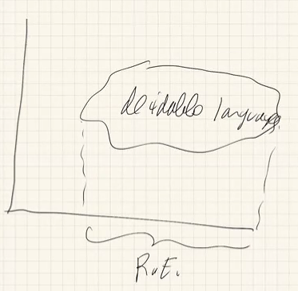
we can generate more complex languages based on L by using this 'projection' operation.
or by complementation of a projection
we do not know if similarly NP∩CoNP=P.
poly time hierarchy each step we get something new
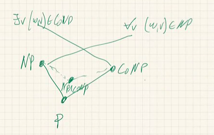
Σn={L′:∃L′∈Γn−1∃v1:(w1,v1)∈L′}, where
Γn={L′:∃L′∈Σn−1∀v:(w,v)∈L′}
we change exists to for all then to exists ..., language will be more and more complex (logical complexity)
we do not know whether the intersection of all this hierarchy is P.
there are lots of connections between P/NP/coNP and logics.
defn. we say A is reducible to B, A≤mCB if there is a reduction f:A→B within the resources class C.
we will consider ≤mP, the reduction function should be computable within poly time.
observations.
∀A:A≤mPA
∀A,B,C:A≤mPB∧B≤mPC⟹A≤mPC
claim. if f,g∈P then f∘g∈P. proof. let f∈T(nk),g∈T(nl) for some k,l, this means for all w, ∣g(w)∣=O(∣w∣l), so f(g(w))∈T((∣w∣l)k) so g(n)=O(nkl). □
corollaries.
∀A,B∈P:A≤mPB
∀A∈P,B∈NP:A≤mpB
∀B∈P:A≤mPB⟹A∈P
some examples of reduction:
defn. a 3-SAT variable is any propositional variable, a 3-SAT literal is any variable or its negation, a 3-SAT clause is ∧,∨ of 3-SAT literals, a CNF (conjunctive normal form) formula has clauses that have ∨,¬, and clauses are joined using ∧.
every propositional formula is equivalent to a CNF formula
in fact for every boolean function f:1,0n→{0,1} there exists a CNF formula such that the truth table of f equals the truth table of that formula.
whenever we see a row like 1001→1, we construct p1∧¬p2∧¬p3∧p4, use de morgan's law to convert to CNF
finally use ∨ to join all rows
3-SAT: the set of all CNF formulas in which every clause has 3 literals.
claim.CNF−SAT≤mp3SAT.
split clause into pieces, eg p1∨p2∨p3∨p4≡(p1∨p2∨p3)∧(¬p1∨p3∨p4).
claim.3SAT≤mPK-Clique. proof. given φ=C1∩C2∩...∩Ck=(l11∨l12∨l12)∧...∧(lk1∨lk2∨lk2) as input of 3SAT. for each clause, spawn 3 vertices. we connect every pair of vertices by an edge except if either the pair belongs to the same triplet, or labeled with contradictory literals. then if φ is satisfiable iff G has a k-clique. □
defn. a language L is NP-hard if SAT≤mPL.
defn.L is NP-complete if L∈NP and for all V∈NP, V≤mP to L.
in other words, it is NP and NP-hard.
theorem.(cook-levin) for every L in NP, L≤mPSAT, ie SAT is NP-complete.
even 3SAT is NP-complete
corollary.K-Clique is NP-complete.
corollary. if SAT can be solved by poly time, then so can any problem in NP.
corollary. for every L such that SAT≤mPL, if L is solvable in poly time, then so is every problem in NP.
after this theorem, we know P=NP⟺3SAT∈P (or any other NPC problem).
many practical problems can be cast as instances of SAT (hardware verification).
there are lots of SAT solvers.
Week 14. Apr 4
outline of proof for cook-levin: given an NP language L, we want to find a poly time reduction f such that w∈L iff f(w) is satisfiable formula. we know there is some non-deterministic TM M={Σ,Γ,Q,q0,qacc,δ} with w∈L iff some computation of M that starts with input w and ends in qacc. let k be such that each run of M on w consists of at most ∣w∣k steps.
we now construct a prop formula φM,w that encodes a run of M on w.
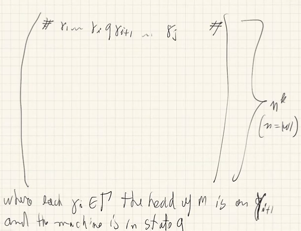
the number of cols is roughly ∣w∣k. we want our formula to express the following:
φ1=first row is #q0w1...wn...#
φ2 = every entry in the matrix is either in Γ or in Q
φ3 = in every raw exactly one entry is in Q
φ4 = in one of rows we have qacc
φ5 = every row is a δ move from the row above it
for each i,j≤nk,s∈γ∪Q, we will have a prop variable pijs. we give this variable true iff s is the content of the (i,j) entry of the matrix. then the first row can be described by:
and continue in this fashion we will get a formula satisfiable iff we have a valid run on the input.
are there languages L such that L∈NP and L∈/P? if all L∈NP except empty and universe is NPC then P=NP.
eg. we say a graph G=(V,E) has a k-size vertex cover if there is some W⊆V,∣W∣=k such that every e∈E contains one vertex in W. let LVC={⟨G,k⟩:G has vertex cover of size k}. then it is NP-complete.
it suffices to show 3SAT≤mPLVC. given 3SAT formula φ, construct a graph G and a number k.
type 1 vertices: for each variable p in φ, produce an edge connecting two nodes p and p.
type 2 vertices: then for each clause, add three nodes corresponding to the three literals and connect them to each other within the clause gadget, and to the type 1 nodes that have same labels.
then the total number of vertices is 2m+3l where m is number of variables and l is number of clauses. choose k=m+2l.
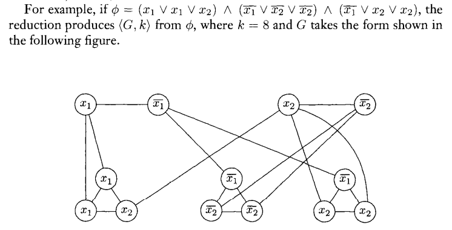
...
roughly speaking, we view problems in P as feasible (solvable in measurable time) and NP-hard problems as infeasible. the difference is not so sharp
a problem can be outside P due to just very rare hard instances
being in P does not yield easy solutions since the poly time exponent may be to large
consider following scenario: SAT∈/P but there is algo that solves SAT in time ns(n) where s is a very slow growing function (inverse of difficult-to-compute fast growing function) and we cannot notice the difference. still cannot prove.
aside
oracle computation: endow a turing machine with the ability to query some 'oracle language' L. the ML machine has a new query tape, and when it writes some w on that tape, it gets bit 1 iff w∈L.
eg: CoNP∈PNP. given any w, write copy w to the oracle tape of SAT and get the answer. this is poly time machine that computes Σ∗−SAT.
solavary-gill proved that there exist languages A,B such that PA=NPA,PB=NPB
as corollary, no diagonalization argument can resolve the P vs. NP question.